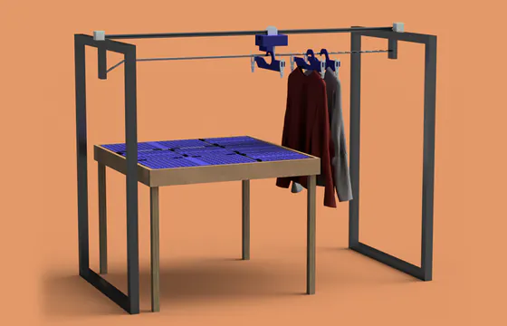
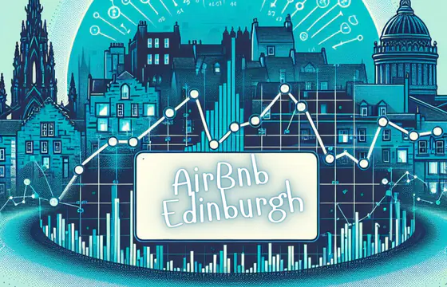
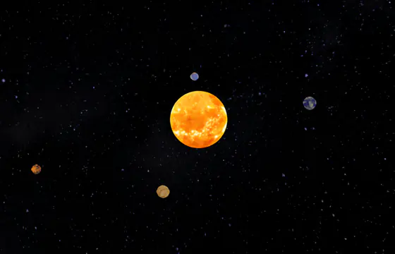

I build tools for the people who research and trade at Marshall Wace, moving to a different engineering team every four months. Before that I read Computer Science at Edinburgh, wrote a language for describing processors in Lean 4, and spent a summer building for traders at J.P. Morgan.
Away from a screen I paint, play the flute, and read more about markets than is strictly healthy.
Software engineer on the graduate rotation, four months to a team. So far: the AI platform, infrastructure, quant pricing, and now investment tooling. Mostly Python, Java and C++.
Tutor and demonstrator for three years. Ran weekly tutorials for Introduction to Computation — the first-year Haskell course — marking and giving feedback on submissions, and demonstrated the large lab sessions for the object-oriented programming course alongside it.
Software engineering intern in the Asset Management Engine Custody team. Built a Symphony chatbot letting traders pull trade data with natural-language queries — Python and Java microservices behind OAuth, deployed on Kubernetes, tested to 70% coverage. Swapping the Java microservice lets another team adopt the whole thing.
Pitched and researched securities for the UK’s largest student-led fund, then £89,000 under management, valuing with comparables and DCF. Got BlackRock’s iShares Corporate Bond ETF into the portfolio as a long-term hold, took Best Pitch and Best Report from a field of fifty, and was promoted to run the alternatives sector — fixed income, and mentoring new members.
Research intern under Prof. Vijay Nagarajan, working with two research associates on a domain-specific language for describing processors in Lean 4. Built a five-stage pipelined MIPS core with it, proposed additions to the language, and set up the CI.
Head of Informatics and Mathematics, Edinburgh Scientific Research Association·Analyst intern, Centrum Wealth, New Delhi·Intern, Tech Mahindra, Noida
Content-based and collaborative filtering over a ratings corpus, taking one film or several as the seed. Built with Dugald Macintyre.
An assistive clothes-folding rig on a Raspberry Pi and Pico, built for people with limited mobility. Read the report.

Price prediction across the city’s listings — cleaning, PCA, and a nine-page write-up of what actually moves a nightly rate.

Simulated portfolios marked against a live price feed, built to learn how APIs and settlement actually behave.
An n-body simulation in two dimensions, integrated with the three-step Beeman scheme.

BEng Computer Science, First Class Honours. Courses across algorithms and data structures, operating systems, computer security, natural language processing and data science.